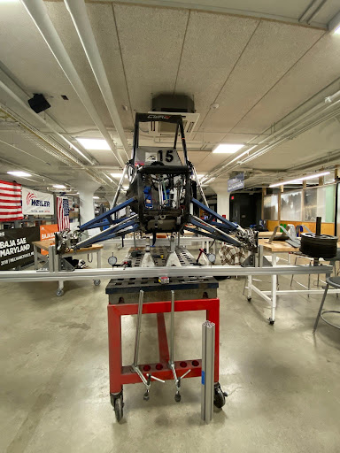

I designed and implemented a testing procedure to measure torsional stiffness of a single seat off-road racecar.
The setup uses a long piece aluminum extrusion which connects to the front hubs on either side of the car. The rear of the car is held fixed and all 4 shocks are replaced with solid steel bars. We use dial indicators to measure deflection and barbell plates to apply load on either side of the car. We collected data for loading and unloading both sides of the car. Using basic trigonometry, we were able to calculate values of stiffness in lb-ft/degree and take an average over the loading and unloading of both sides.

Our torsional stiffness testing was used to validate simulation results and inform design for future cars.